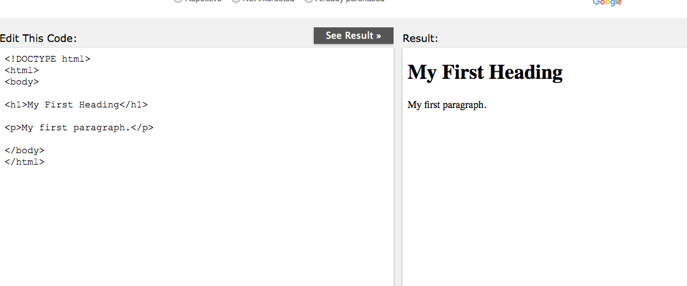
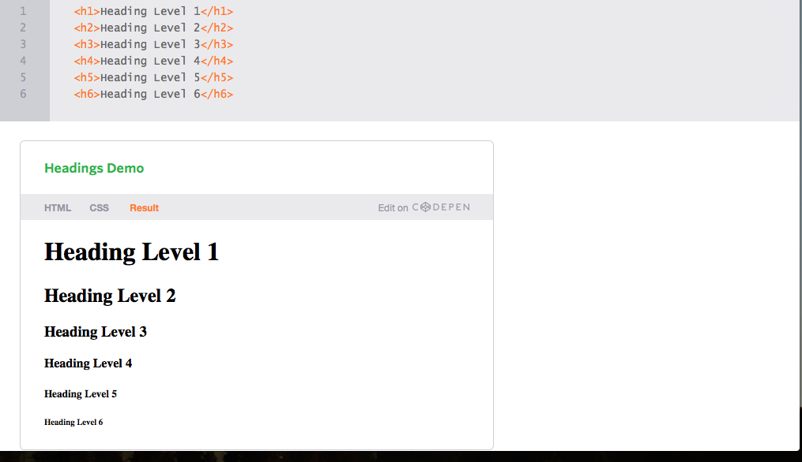
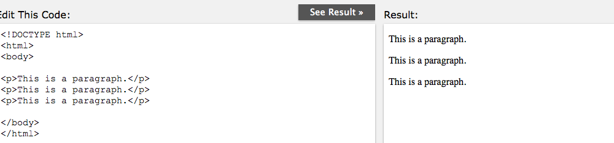
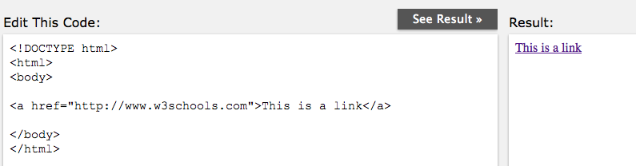
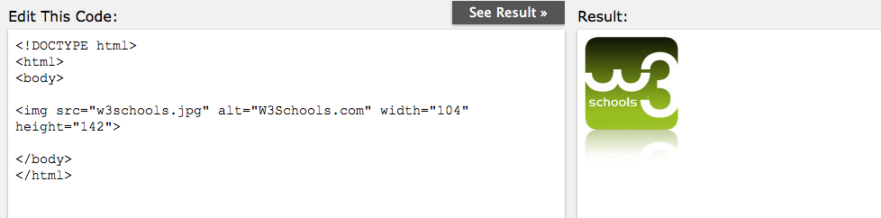
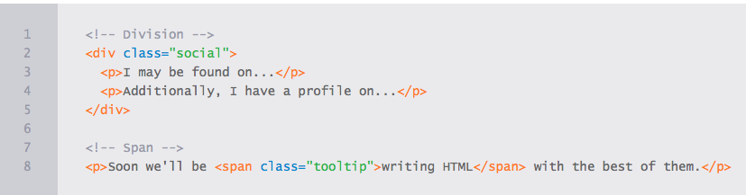
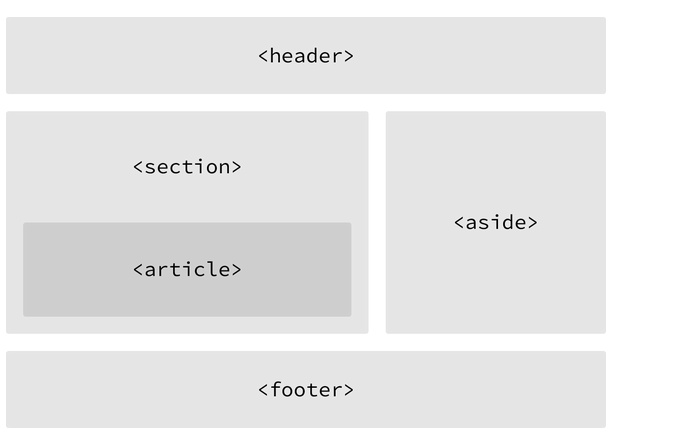

This tutorial is designed for the aspiring Web Designers with a need to understand the HTML in enough detail along with its simple overview, and practical examples. This tutorial will give you enough ingredients to start with HTML.
Prerequisites
Before proceeding with this tutorial you should be familiar with:
Any text editor like notepad, notepad++, or Editplus etc.
How to create directories and files on your computer.
How to navigate through different directories.
How to type content in a file and save them on a computer.
Understanding about images in different formats like JPEG, PNG format.
HTML Documents
All HTML documents must start with a type declaration: <!DOCTYPE html>
The HTML document itself begins with <html> and ends with </html>
The visible part of the HTML document is between <body> and </body>

Headings
Headings are block-level elements, and they come in six different rankings, <h1> through <h6>. Headings help to quickly break up content and establish hierarchy, and they are key identifiers for users reading a page. They also help search engines to index and determine the content on a page.
Headings should be used in an order that is relevant to the content of a page. The primary heading of a page or section should be marked up with an <h1> element, and subsequent headings should use <h2>, <h3>, <h4>, <h5>, and <h6> elements as necessary.
Each heading level should be used where it is semantically valued, and should not be used to make text bold or big.
Here is an example of HTML for all the different heading levels and the resulting display on a web page.

HTML Paragraphs
The <p> tag offers a way to structure your text into different paragraphs. Each paragraph of text should go in between an opening <p> and a closing </p> tag.HTML paragraphs are defined with the <p > tag:

HTML Links
A link is specified using HTML tag <a>. This tag is called anchor tag and anything between the opening <a> tag and the closing </a> tag becomes part of the link and a user can click that part to reach to the linked document. Following is the simple syntax to use <a> tag.HTML links are defined with the <a> tag

HTML Images
HTML images are defined with the <img> tag.
The source file (src), alternative text (alt), and size (width and height) are provided as attributes:

Identifying Divisions & Spans
Divisions, or <div>s, and <span>s are HTML elements that act as containers solely for styling purposes. As generic containers, they do not come with any overarching meaning or semantic value. Paragraphs are semantic in that content wrapped within a <p> element is known and understood as a paragraph. <div>s and <span>s do not hold any such meaning and are simply containers.
Block vs. Inline Elements
Most elements are either block- or inline-level elements. What’s the difference?
Block-level elements begin on a new line, stacking one on top of the other, and occupy any available width. Block-level elements may be nested inside one another and may wrap inline-level elements. We’ll most commonly see block-level elements used for larger pieces of content, such as paragraphs.
Inline-level elements do not begin on a new line. They fall into the normal flow of a document, lining up one after the other, and only maintain the width of their content. Inline-level elements may be nested inside one another; however, they cannot wrap block-level elements. We’ll usually see inline-level elements with smaller pieces of content, such as a few words.
Both <div>s and <span>s, however, are extremely valuable when building a website in that they give us the ability to apply targeted styles to a contained set of content.
A <div> is a block-level element that is commonly used to identify large groupings of content, and which helps to build a web page’s layout and design. A <span>, on the other hand, is an inline-level element commonly used to identify smaller groupings of text within a block-level element.
We’ll commonly see <div>s and <span>s with class or id attributes for styling purposes. Choosing a class or id attribute value, or name, requires a bit of care. We want to choose a value that refers to the content of an element, not necessarily the appearance of an element.
For example, if we have a <div> with an orange background that contains social media links, our first thought might be to give the <div> a class value of orange. What happens if that orange background is later changed to blue? Having a class value of orange no longer makes sense. A more sensible choice for a class value would be social, as it pertains to the contents of the <div>, not the style.

Website Layout Using HTML5
HTML5 offers new semantic elements that define different parts of a web page:
| <header> |
| <nav> |
| <section> |
<aside> |
| <article> |
| <footer> |
- header
- Defines a header for a document or a section
- nav
- Defines a container for navigation links
- section
- Defines a section in a document
- article
- Defines an independent self-contained article
- aside
- Defines content aside from the content (like a sidebar)
- footer
- Defines a footer for a document or a section
For the longest time the structure of a web page was built using divisions,the <div> tag. The problem was that divisions provide no semantic value, and it was fairly difficult to determine the intention of these divisions. Fortunately HTML5 introduced new structurally based elements, including the <header>, <nav>, <article>, <section>, <aside>, and <footer> elements.
All of these new elements are intended to give meaning to the organization of our pages and improve our structural semantics. They are all block-level elements and do not have any implied position or style. Additionally, all of these elements may be used multiple times per page, so long as each use reflects the proper semantic meaning.

<header> vs. <head> vs. <h1> through <h6> Elements
It is easy to confuse the <header> element with the <head> element or the heading elements, <h1> through <h6>. They all have different semantic meanings and should be used according to their meanings. For reference…
The <header> element is a structural element that outlines the heading of a segment of a page. It falls within the <body> element.
The <head> element is not displayed on a page and is used to outline metadata, including the document title, and links to external files. It falls directly within the <html> element.
Heading elements, <h1> through <h6>, are used to designate multiple levels of text headings throughout a page.
Navigation
The <nav> element identifies a section of major navigational links on a page. The <nav> element should be reserved for primary navigation sections only, such as global navigation, a table of contents, previous/next links, or other noteworthy groups of navigational links.
Most commonly, links included within the <nav> element will link to other pages within the same website or to parts of the same web page. Miscellaneous one-off links should not be wrapped within the <nav> element; they should use the anchor element, <a>, and the anchor element alone.
Example:
<nav>.........</nav>
Article
The <article> element is used to identify a section of independent, self-contained content that may be independently distributed or reused. We’ll often use the <article> element to mark up blog posts, newspaper articles, user-submitted content, and the like.
When deciding whether to use the <article> element, we must determine if the content within the element could be replicated elsewhere without any confusion. If the content within the <article> element were removed from the context of the page and placed, for example, within an email or printed work, that content should still make sense.
Example:
<article>.........</article>
Section
The <section> element is used to identify a thematic grouping of content, which generally, but not always, includes a heading. The grouping of content within the <section> element may be generic in nature, but it’s useful to identify all of the content as related.
The <section> element is commonly used to break up and provide hierarchy to a page.
Deciding Between <article>, <section>, or <div> Elements
At times it becomes fairly difficult to decide which element—<article>, <section>, or <div>—is the best element for the job based on its semantic meaning. The trick here, as with every semantic decision, is to look at the content.
Both the <article> and <section> elements contribute to a document’s structure and help to outline a document. If the content is being grouped solely for styling purposes and doesn’t provide value to the outline of a document, use the <div> element.
If the content adds to the document outline and it can be independently redistributed or syndicated, use the <article> element.
If the content adds to the document outline and represents a thematic group of content, use the <section> element.
Example:
<section>.........</section>
Aside
The <aside> element holds content, such as sidebars, inserts, or brief explanations, that is tangentially related to the content surrounding it. When used within an <article> element, for example, the <aside> element may identify content related to the author of the article.
We may instinctively think of an <aside> element as an element that appears off to the left or right side of a page. We have to remember, though, that all of the structural elements, including the <aside> element, are block-level elements and as such will appear on a new line, occupying the full available width of the page or of the element they are nested within, also known as their parent element.
Example:
<aside>.........</aside>
Footer
The <footer> element identifies the closing or end of a page, article, section, or other segment of a page. Generally the <footer> element is found at the bottom of its parent. Content within the <footer> element should be relative information and should not diverge from the document or section it is included within.
<footer>.........</footer>